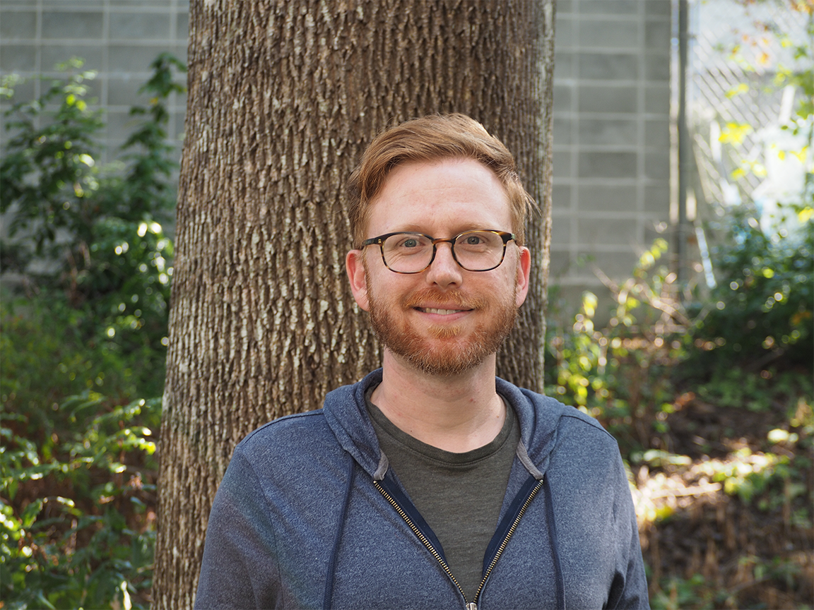
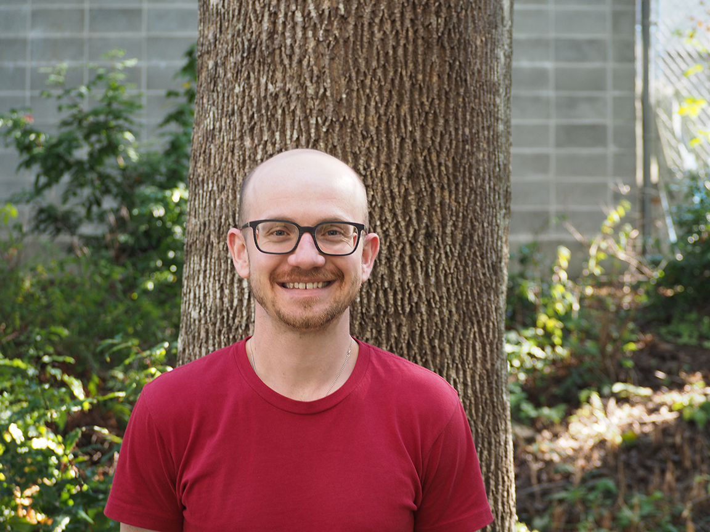
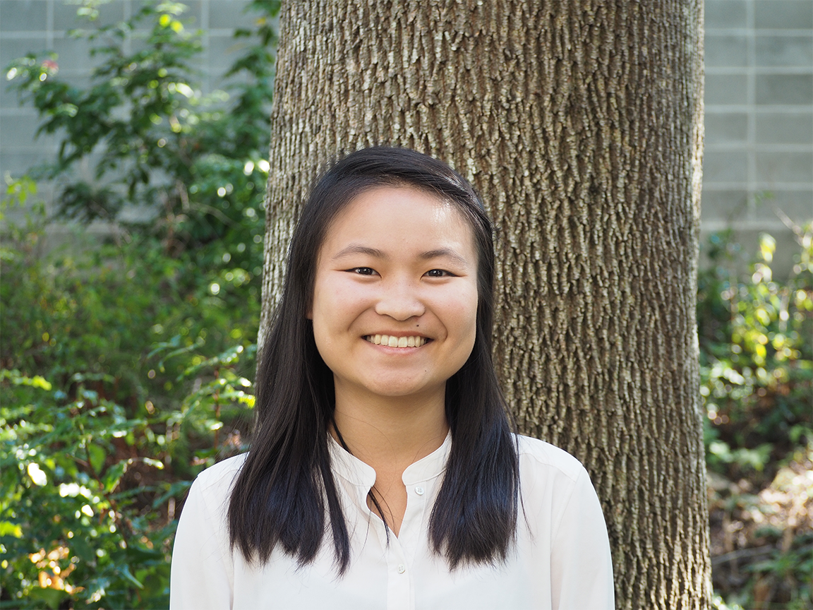
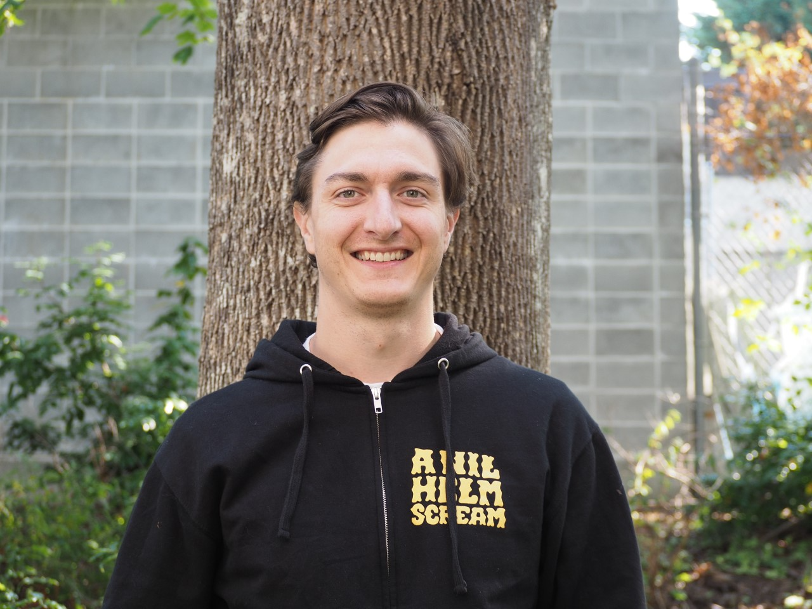
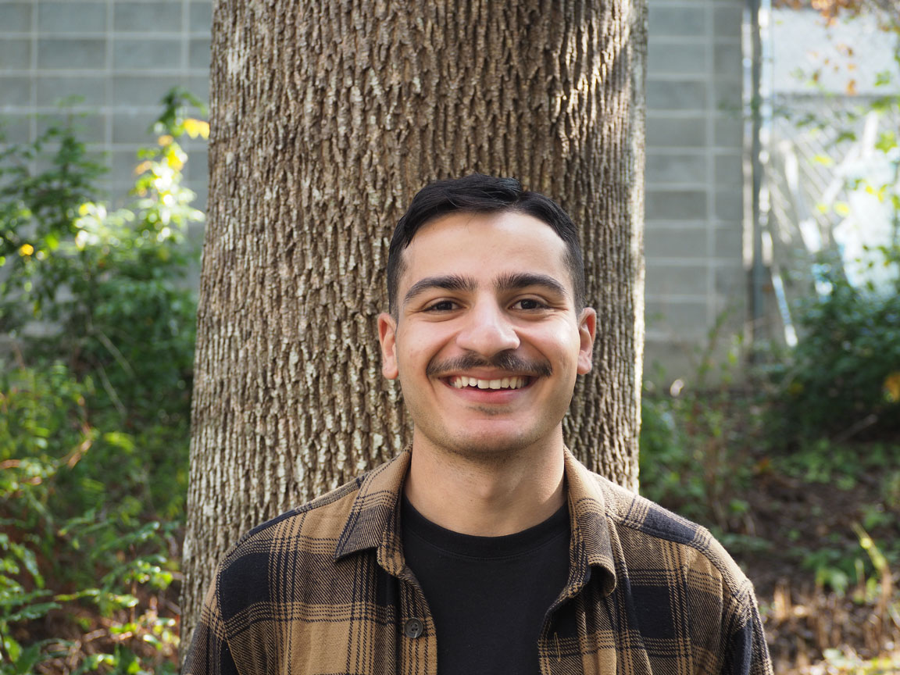
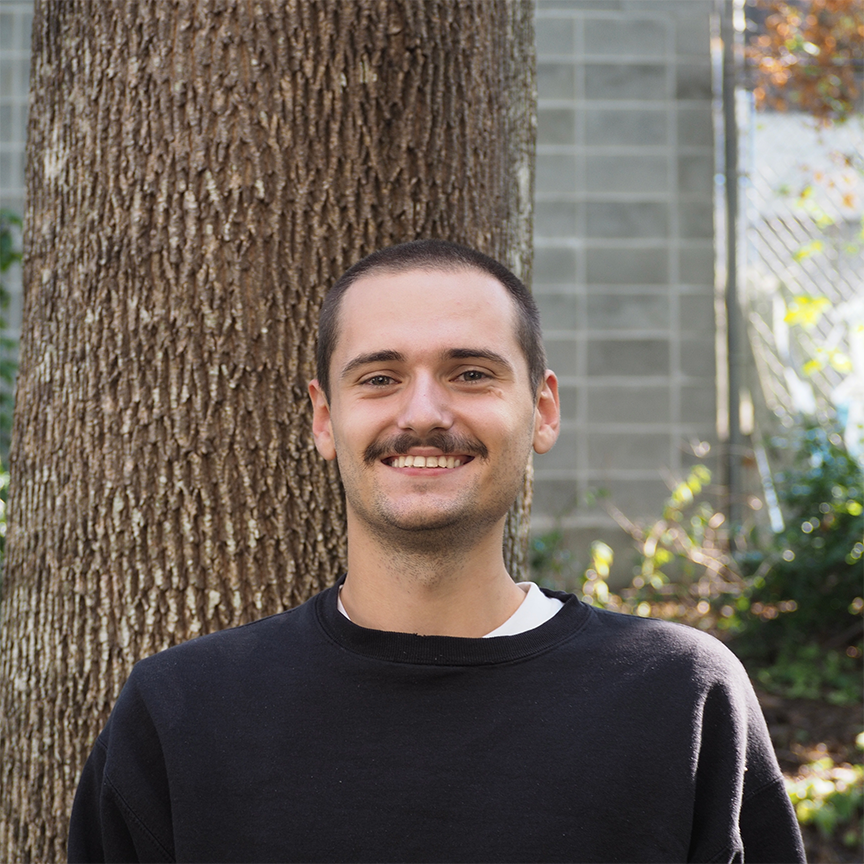

People
PI

Gregory L. Owens
Greg is an Assistant Professor of department of Biology at the University of Victoria. He completed his MSc in Biology at the University of Victoria studying opsin gene expression in the four-eyed fish Anableps anableps. He then did a PhD in Botany at the University of British Columbia using genomics to study hybridization in sunflowers. Greg recieved the Banting Postdoctoral Fellowship to work on structural variation in sunflowers at the University of California, BerkeleyPostdoctoral Researchers

Jordan Bemmels
Jordan is interested in population genomics, conservation genetics, and biogeography. In the Owens Lab, he is studying population genetic structure and patterns of environmental adaptation in two British Columbia kelp species, to establish baseline knowledge that will aid conservation and restoration of declining kelp forests. His past work has largely focused on understanding geographic range shifts and evolutionary adaptation in response to climatic and geological change, in systems such as kiwi birds, flycatchers, and temperate and tropical plants.Graduate Students

Kaede Hirabayashi
I’m a MSc student currently working on sequencing and assembly of lingonberry genome. The project aims to explore the genomic diversity and evolutionary background of the species, and clarify the origin and genomic fingerprints of its two subspecies. My research interest is driven by (broadly) biodiversity conservation, which directed me to study plants whom all of us as animals rely on to live. When I’m not studying, you can find me taking landscape photos, listening to classical music, strolling in the park, cooking, baking, or dancing ballet.
Nathan Sykes
Nathan is a master’s student interested in population genetics, local adaptation, and speciation. He is particularly fascinated by gene flow and phenotypic variation in metapopulations with broad ranges, the fitness effects of introgression, and the genomic rearrangements underlying reproductive isolation. His first foray into biological research examined the distribution, phylogeny, and commercial viability of feral hops in the Fraser Valley, BC. Currently, he is thrilled to be working on Pacific rockfish population genetics and sex chromosome evolution.Undergraduate Students

Adam Gheis
Adam is an undergraduate completing an honours degree in Biology. This year he will be looking at sockeye and Chinook salmon genomes. He hopes to find out if there was a genetic basis underlying the successful passage of salmon to spawning locations after a landslide blocked their passage through the Fraser River. Last summer he studied the plasticity of a weed called common groundsel in coastal and inland ecosystems. He has previously done some research on the social demographics of a rare neurological disease. He is interested in genomics, medicine, entomology and plants. Over the course of this year he is excited to learn more about the intersection of genomics with ethics and further his understanding of computational biology.
Alex Pinch
Alex is an undergraduate in their last year of a BSc in Biology. His research interests include locally adaptive inversions and applying machine learning to computational biology. Outside of the lab, Alex enjoys programming, making music, and keeping his Duolingo streak.Former lab members
- Sara Wuitchick - Postdoctoral researcher (2022) - Assistant Professor at Mount Royal University
- Ethan Dhaliwal - Directed studies (2021)
- Dixita Basumatary - Directed studies (2021)
- Koa Planedin - Co-op Research student (2021)